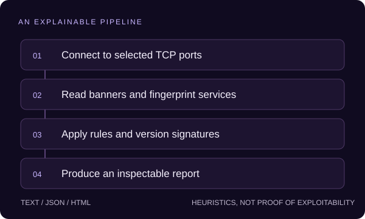

Field note 01 / Security tooling
Open ports are a starting point.
Not a security verdict.
vulnscan connects to selected TCP ports, reads service banners, applies heuristic checks, and turns the results into an inspectable report. Its value is a transparent pipeline—not a promise to find every vulnerability.
The short version
The problem: a list of open ports doesn't explain what is listening or why it might deserve attention.
The approach: combine concurrent connections, a small fingerprinting layer, port-based rules, and version signatures. Keep the path from input to finding understandable.
The boundary: a warning is evidence to investigate. A banner or port number alone does not prove exploitability, authentication state, or complete patch status.
Four steps you can inspect.

1. Connect
The host is resolved to IPv4. A ThreadPoolExecutor handles TCP connect attempts with a per-port timeout. Closed ports are discarded; open ports continue through assessment.
2. Fingerprint
Banner probes try to identify a product and version. Coverage is deliberately narrow and depends on what the remote service reveals.
3. Assess
A static port-based risk map and a local version-signature database produce findings. These are heuristic checks, not a full CVE applicability analysis.
4. Report
The renderer produces text by default, or JSON and self-contained HTML when requested. The CLI supports -o to save the selected output format.
Decisions worth making explicit.
Threads instead of an asynchronous rewrite
TCP connection attempts spend time waiting on the network. Threads keep this educational implementation small and inspectable. The tradeoff is per-thread resource cost; this is not a design for internet-scale scanning.
A report must distrust its own input
Service banners come from remote systems. The HTML renderer escapes target-controlled text and allows only HTTP(S) reference links. Text output normalizes line breaks so a banner cannot impersonate additional report lines.
Simple exit codes, with a limitation
Any finding produces exit code 1; no findings produces 0. Severity-threshold gating is not implemented. A pipeline must not interpret every nonzero finding result as a confirmed high-severity issue.
A safe local walkthrough.
Only scan systems you own or are explicitly authorized to test. In a local checkout, install the package and inspect its help:
python -m pip install -e .
python -m vulnscan --helpStart a disposable HTTP server in one terminal. Run the scanner in a second terminal:
# Terminal 1 — local test service only
python -m http.server 8000 --bind 127.0.0.1
# Terminal 2 — inspect only that local port
vulnscan 127.0.0.1 -p 8000 -f html -o report.htmlOpen report.html and trace each finding back to the relevant rule. This is a reproducible workflow, not a claim that this server will produce a particular vulnerability or score.
What it does not prove.
- IPv4 TCP-connect scanning only; no UDP, SYN, or comprehensive TLS-service assessment.
- Port-keyed checks can miss services on unusual ports or flag a different service using a familiar port.
- Banners can be spoofed, and simple version thresholds do not account reliably for vendor backports.
- The signature database is small and static. No finding is not proof that a host is safe.
- Optional web-header findings are attached to the first open port; without an open port they are not retained in the report.
- The web checker disables certificate verification. It should not be described as a TLS trust check.
Read the implementation.
This walkthrough describes the repository at 7f9d0e8. Project metadata and license notices remain in the source repository.
The next meaningful improvement
Key service-risk checks on the identified service, model web findings against their URL, restore certificate validation, and add severity-threshold exit codes. Each should come with a regression test—not a stronger marketing claim.